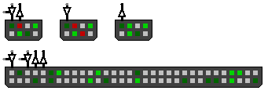

| Library: | Input/Output |
| Introduced: | 2.1.3 |
| Appearance: |  |
This component was designed for FPGA synthesis, but it may be useful as a generic I/O component as well. A Port I/O component displays a series of values as small colored boxes: 0 is shown as dark green, 1 as bright green, X (floating) as gray, and Z (error) as red. The component can be configured as an output, as an input, or as a bi-directional port:
output mode: takes a value from the connected wire and displays the bits as a series of colored dots.
input mode: drives a series of bits to the connected wire based on tri-state toggle switches, shown as colored dots, which the user can click to change between 0, 1, or X.
bi-directional mode: each bit acts as an input or an output based on a control signal (or a series of control signals, one for each bit).
In output mode, this component is mostly equivalent to a simple array of
 LED
components or a
LED
components or a
 LED
Matrix, or in some cases could be replaced by
an
LED
Matrix, or in some cases could be replaced by
an  Output Pin.
In input mode, a Port I/O component is mostly equivalent to a
Output Pin.
In input mode, a Port I/O component is mostly equivalent to a
 DIP Switch, or in some cases could be replaced by an
DIP Switch, or in some cases could be replaced by an
 Input Pin.
However, Port I/O has certain advantages: it supports up to 120 bits, it is very
compact, it supports a bi-directional mode, and it supports FPGA synthesis. In
particular, it is the only way from within Logisim to make use of the
bi-directional features of FPGA I/O resources.
Input Pin.
However, Port I/O has certain advantages: it supports up to 120 bits, it is very
compact, it supports a bi-directional mode, and it supports FPGA synthesis. In
particular, it is the only way from within Logisim to make use of the
bi-directional features of FPGA I/O resources.
When configured in bi-directional or output mode, there is one data input pin (or, if there are more than 32 bits, enough data input pins as needed for all of the bits). The values at this port (or ports) are used to drive the lights.
When configured in bi-directional or input mode, there is one data output pin (or, if there are more than 32 bits, enough data output pins as needed for all of the bits). Te values at this port (or ports) are driven depending on the user-selected toggle switches.
When configured in the bi-directional 'in/out (single enable)' mode, there is a single 1-bit control input that determines whether all of the bits are in output mode (when the control input is a 1) or input mode.
When configured in the bi-directional 'in/out (per-bit enable)' mode, there is one n-bit control input for each n-bit data input. Each of these control bits determines whether the corresponding data bit is in output mode (when the control input is a 1) or input mode.
When the component is selected or being added,
Alt-0 through Alt-9 alter its Number of PIN
attribute,
and the arrow keys alter its Facing
attribute,
For bits in input mode, pressing the mouse on a colored square will cycle through the values 0 (light green), 1 (dark green), and X (floating, gray).
Supports VHDL and Verilog synthesis.